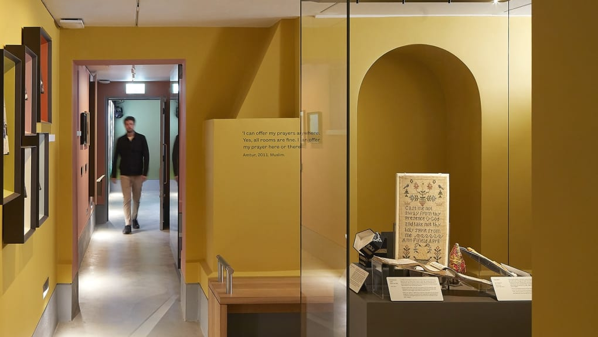

Exploring the Essence of Home
An Interactive Seminar with Louis Platman - April 30th 1-2pm, Clarendon Building SR1.01, University of Leeds.

Join us for a captivating interactive seminar led by Louis Platman, curator at London's renowned Museum of the Home. Louis specialises in the diverse narratives and evolving interpretations of what home means across different communities and historical periods.
Event Details:
- Date: Wednesday, April 30, 2025
- Time: 1:00 PM – 2:00 PM
- Location: Clarendon Building SR1.01, University of Leeds and On Teams
- What3words: ///yours.frame.values
Seminar Highlights:
- Understanding how the concept of "home" shapes personal and collective identity.
- Insights into curating exhibitions that resonate with diverse audiences.
- Interactive group discussions and activities on the emotional and cultural dimensions of home.
About Louis Platman:
Louis Platman is a respected curator at the Museum of the Home, dedicated to exploring how domestic spaces influence our lives and well-being. His exhibitions encourage meaningful community dialogue and representation of diverse lived experiences.